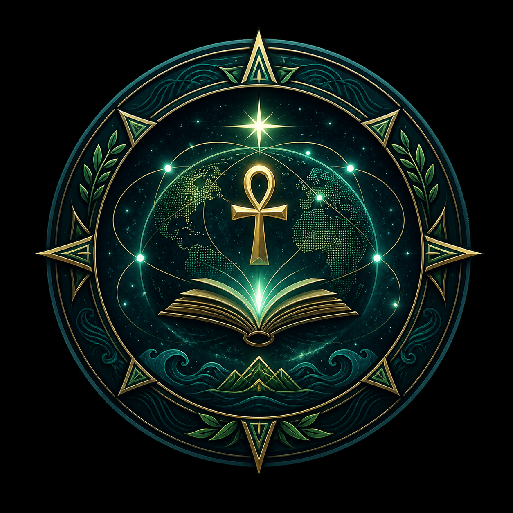

✦
Culture · Module
Cultural Journeys
Choose a pathway.

Cultural Journeys Roadmap
Ka ʻIke Ola
Begin with the whole map before entering a culture. Each section is a deep pathway through living knowledge, primary sources, cultural respect, and the traditions of living peoples.